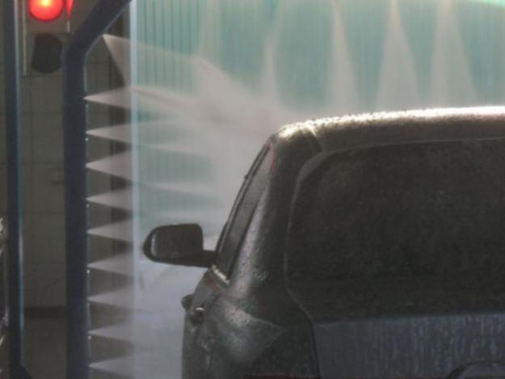

В отдельных случаях в качестве альтернативы автоматическим щеточным мойкам можно рассматривать услуги автоматических бесконтактных моек.
Бесконтактные (бесщеточные) мойки могут быть как портальными, так и туннельными (или иметь особую конструкцию). В мойках такого типа основным моющим инструментом является консоль с форсунками высокого давления, сквозь которые струи воды под давлением порядка 80-100 бар льются на поверхность автомобильного кузова. У наиболее совершенных моделей бесконтактных моек водяные форсунки способны совершать вращательные или колебательные движения, за счет чего значительно повышается их моющая способность.
Но даже столь мощный напор воды не в состоянии справиться со всеми загрязнениями, скапливающимися на поверхности кузова. Поэтому на бесконтактных мойках приходится пользоваться специальными химически агрессивными средствами, которые способны за считанные минуты разрыхлить верхние слои грязи и снизить адгезию прочной грязевой пленки к поверхности лакокрасочного покрытия. Но использование агрессивных моющих средств может пагубно отразиться на декоративных качествах этого самого покрытия, а также на внешних пластиковых и резиновых деталях.
Эксплуатация бесщеточных моек характеризуется большими затратами. Во-первых, изначально стоимость таких моек в 1,5 раза выше, чем у аналогичных моек с щетками, во-вторых, это обслуживание дорогостоящих насосов высокого давления и точных форсунок и, в-третьих, процесс бесконтактной мойки требует большего количества вспомогательных химических средств, равно как и самой воды, которую вначале необходимо очистить от солей кальция и магния, а после мойки автомобиля - от химических примесей моющих средств. Понятно, что в конечном счете все эти расходы ложатся на плечи автовладельцев, пользующихся их услугами. Также после посещения бесконтактной мойки могут быть неприятно удивлены владельцы автомобилей с плохим уплотнением дверных проемов: высока вероятность того, что вода проникнет в салон автомобиля.
Наномойка Антидождь Инновационный автошампунь Полировка «Жидкое стекло»